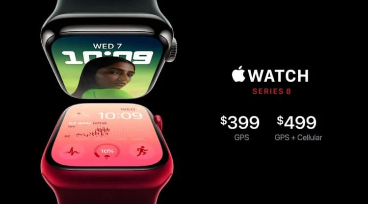

7 сентября, Apple представила новую версию своих умных часов — Apple Watch Series 8. Главный вопрос, который беспокоил поклонников Apple Watch: подойдут ли старые ремешки. С учетом того, что корпус не претерпел никаких видимых изменений, то проблемы с совместимостью старых ремешков и Series 8 не будет. Как и раньше, они получили две версии — на 41 и 45 мм. В остальном это все те же привычные нам уже не первый год Apple Watch. Никакого круглого дизайна, никаких лишних дизайнерских решений. Строгая классика.
Мы уже привыкли, что Apple Watch позволяют пользователям следить за своим здоровьем. Сначала часы предоставили возможность отслеживать пульс, потом к этой возможности добавилась запись ЭКГ. С началом пандемии Apple добавила в Apple Watch пульсоксиметр. Теперь ко всем этим датчикам добавляется еще возможность определить температуру тела. Проще говоря, часы получили термометр.
Однако имейте в виду, что так как это не обычный градусник, которым мы привыкли мерить температуру, то его показания могут быть не до конца точными. Особенно если учесть тот факт, что считывает он температуру кожи с запястья. Но использоваться он будет для контроля за женским здоровьем и пытаться предсказать овуляцию. Возможно сторонние приложения получат к нему доступ, но на текущий момент об этом ничего не известно.
Apple Watch Series 8 смогут определять, что ваш автомобиль попал в аварию и автоматически звонить в службу спасения. Все это благодаря улучшенным акселерометру и гироскопу. Если часы определили аварию, то у вас будет десять секунд, чтобы отменить вызов спасателей. В противном случае часы передают ваши координаты, звук с микрофона и давление в службу спасения
Apple Watch Series 8 получили прошлогодний процессор S7. Который, в свою очередь, практически не отличается от S6. То есть третий год подряд Apple, по сути, устанавливает в свои часы старый чип, просто меняя его название.
Но отдельно следует выделить новый режим энергосбережения. При его активации большая часть функций Apple Watch Series 8 будет работать, но с более низкой производительностью. Однако этот режим получат и другие модели Apple Watch вместе с watchOS 9, поэтому он никак не связан с аппаратной частью Series 8. Время работы от одного заряда при его использовании можно будет продлить до 36 часов, что можно считать полными двумя днями. В мире Apple Watch это будет считаться отличным показателем. По крайней мере, теперь можно по полной программе использовать все их функции и не переживать, что часы не доживут до вечера.

Как и в прошлом году, Apple Watch Series 8 получили четыре разных цвета: красный, серебристый, золотой и синий. Доступны версии как из алюминия, так и из нержавеющей стали. На стальной версии, как это обычно бывает, следы эксплуатации будут появляться значительно быстрее. Все остальные функции, которые доступны в Series 7, есть и здесь. Это:
Быстрая зарядка.
Обнаружение падения с велосипеда.
Ввод текста с клавиатуры.
Влагозащита IPX 6.
Always On Display
Все остальное будет завязано на watchOS 9 и доступно на других моделях часов. Стоимость новых Apple Watch стартует с $399. Так как официально эти часы в России подаваться не будут, то можно предположить цену, которую установят на них при поставках через параллельный импорт. За Apple Watch Series 7 41 мм у нас просят 39 тысяч рублей. Скорее всего, такая же цена будет установлена и на Series 8. Остается только надеяться на серый рынок и адекватное ценообразование там. В продажу новые часы поступят 16 сентября. Предзаказ открывается с 7 сентября.
С учетом минимальных изменений у многих возникнет вопрос: а стоит ли менять старые часы на Series 8? Если вас не устраивает автономность вашего устройства, то однозначно да. Новый режим энергосбережение точно не оставит вас равнодушными. Но если с батареей нет никаких проблем, то не стоит гнаться за новинкой. Минимальное количество изменений по сравнению с предыдущим поколением очень огорчает поклонников компании.
Хотелось бы, чтобы Apple активнее взялись за развитие своих умных часов. Было бы здорово, если бы пользователь вообще мог выбрать часы в классическом прямоугольном корпусе или круглом. Тем самым Apple дала бы покупателям выбор, который не предлагает ни одна компания в мире. Одинаковое железо и возможности в разном корпусе. Но в Купертино просто продолжают добавлять возможности по чайной ложке.